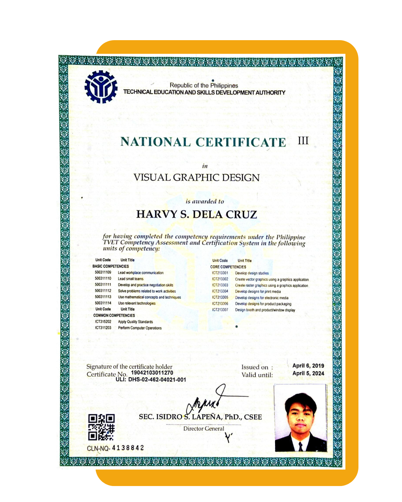

Personal Information

Harvy Soriano Dela Cruz
December 22, 2002
Brgy. San Agustin, Trece Martires City, Cavite, Philippines
Education
Trece Martires City Daycare Center
● Class Valedictorian
Trece Martires City Elementary School
● Consistent Honor Student
● Graduated With Honors - 2nd
Trece Martires City National High School
● Completed Junior High - With Honors
● Enrolled under General Curriculum - Model Section
● Campus Journalist - TV Broadcasting
● Campus Journalist - Layout Artist
● Conduct Awardee
● Visual Graphic Design NCIII Passer
Trece Martires City Senior High School
● Graduated With High Honors
● Enrolled under STEM Strand
● Member of Multimedia Arts Club
● President - STEM Club 2020-2021
● Vice President - STEM Club 2019-2020
● Conduct Awardee
Cavite State University - Main Campus
● Enrolled under BS Computer Science Program
● Outstanding CS Student 2021-2024
● Vice President - Computer Science Student Organization
● Public Relations Officer - Junior Philippine Computer Society
Internship
● City of General Trias Doctors Medical Center Inc.
● Medical Records Intern
● July - August 2024, 240hrs

Certification
● Visual Graphic Design NCIII
